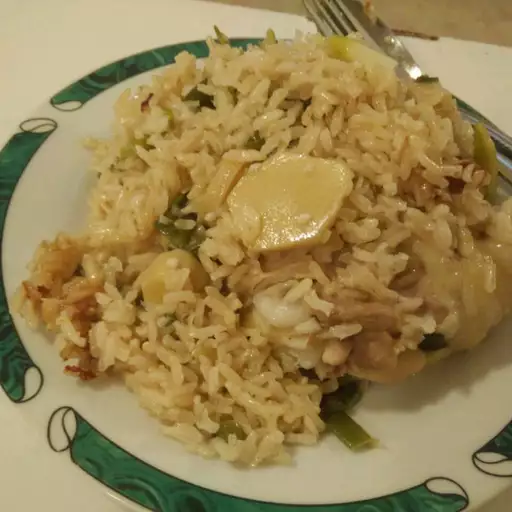

HOME
Garlic Chicken Fragrant Rice

Photo by Yong Jie Wong on Allrecipes.com
Description
This is an extremely simple and quick recipe which produces marvelous results! Garlic is mashed and placed into the rice cooker with some chicken for flavour. The result is the extremely fragrant garlic rice to die for! Delicious by itself, even better with some chicken!
Ingredients
- 3 cups uncooked jasmine rice
- 3 cups water
- 2 tablespoons sesame oil
- 2 cubes chicken bouillon
- ½ cup olive oil
- 1 green onion, chopped
- 2 cloves cloves garlic, smashed
- 1 (2 inch) piece fresh ginger root, crushed
- 1 chicken thigh with skin
Steps
- Place rice, water, sesame oil, chicken bouillon, olive oil, green onion, garlic and ginger in a rice cooker. Stir, and then place chicken thigh on top. Turn on rice cooker.
- When the rice is done, mix the rice so that the oil will be evenly mixed with the rice. Serve.